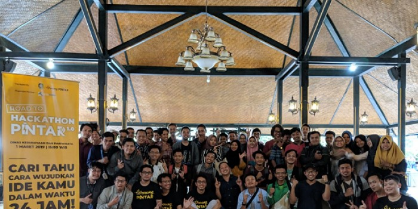
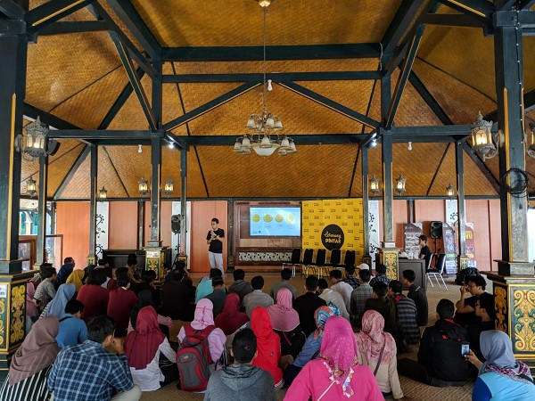

Ajak Anak Muda Membawa Perubahan, Warung Pintar Adakan Hackathon Pertama di Banyuwangi

Warung Pintar perusahaan startup teknologi mikro-ritel secara resmi memulai rangkaian acara ekspansi ke Banyuwangi, Festival Juragan Pintar 30 Maret 2019 nanti. Rangkaian acara dimulai dengan Road to Hackathon Pintar 1.0 di Dinas Kebudayaan dan Pariwisata, Banyuwangi. Hackathon Pintar 1.0 adalah kompetisi kolaboratif menciptakan produk digital untuk memberikan solusi terhadap masalah yang dihadapi dalam waktu 24 jam.
“Banyuwangi dikenal sebagai salah satu destinasi wisata terbaik di Indonesia. Sektor pariwisata dan UMKM adalah salah satu tulang punggung pertumbuhan ekonomi di Banyuwangi. Revolusi Industri 4.0 mendorong usaha mikro hingga besar untuk turut memanfaatkan teknologi agar mampu bersaing,” ungkap Sofian Hadiwijaya, CTO & co-founder Warung Pintar. “Hackathon Pintar 1.0 mengusung Pariwisata dan UMKM Pintar" sebagai tema utama. Kami mengajak anak muda Banyuwangi dan sekitarnya untuk membawa perubahan dengan bersama-sama mencari solusi bagi permasalahan UMKM dan pariwisata di Banyuwangi,” tutup Sofian.

Road to Hackathon Pintar 1.0 dilaksanakan untuk memperkenalkan mekanisme kompetisi, cerita inspirasi tim teknologi Warung Pintar, membahas tantangan UMKM & Pariwisata di Banyuwangi serta solusi yang diharapkan. Acara ini turut dihadiri BRI sebagai salah satu sponsor yang menjelaskan pemanfaatan API di kompetisi ini. Pendaftaran secara online sudah dimulai melalui http://bit.ly/DaftarHackathonPintar dan akan ditutup pada 22 Maret 2019. Tanggal 22 Maret 2019 akan diumumkan 50 tim yang lolos dan mengikuti Hackathon Day pada 29 Maret 2019 di Pendopo Sabha Swagata. Acara puncak berlangsung pada 30 Maret 2019 di Festival Juragan Pintar, Banyuwangi untuk menyeleksi 3 pemenang dengan total hadiah 30 juta rupiah. Warung Pintar berharap Hackathon pertama di Banyuwangi ini dapat menjadi kesempatan anak muda mengasah kreatifitas dan ikut terlibat langsung membawa perubahan untuk UMKM dan pariwisata di Banyuwangi.